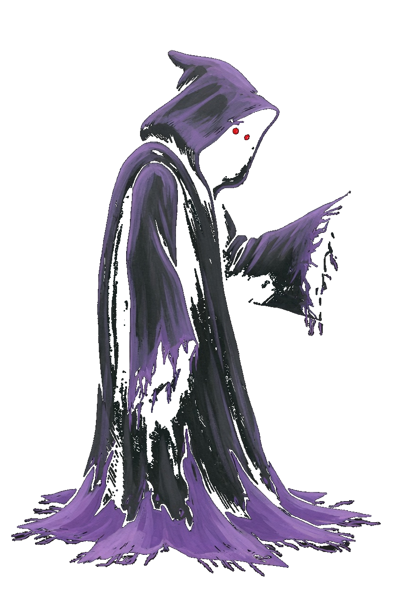
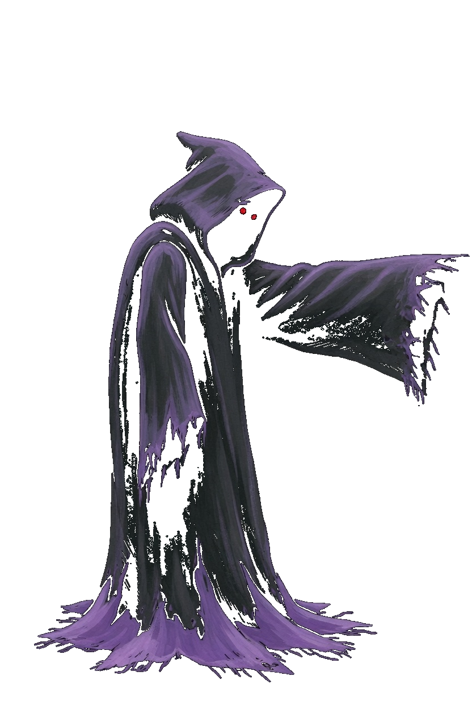
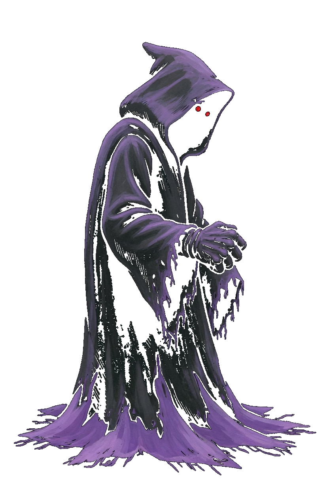
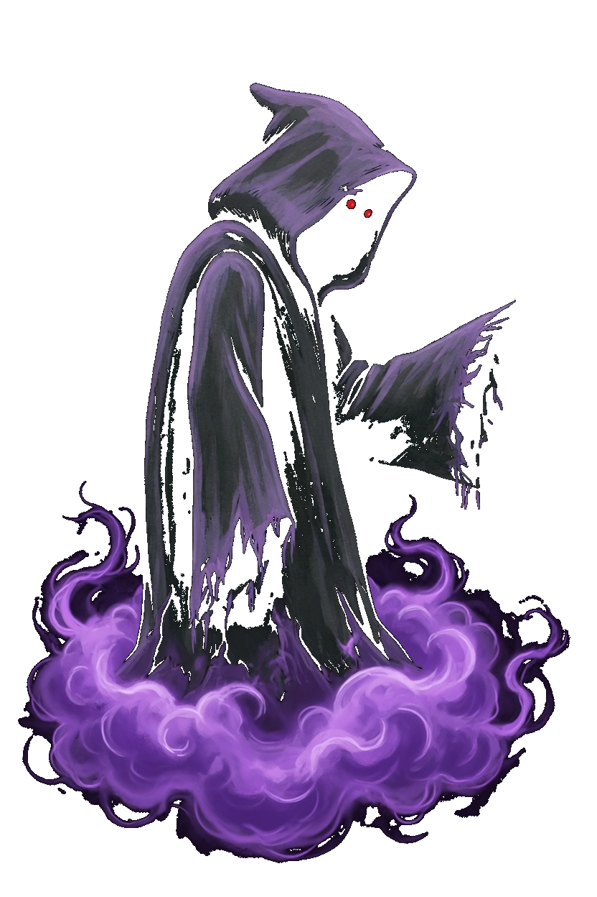
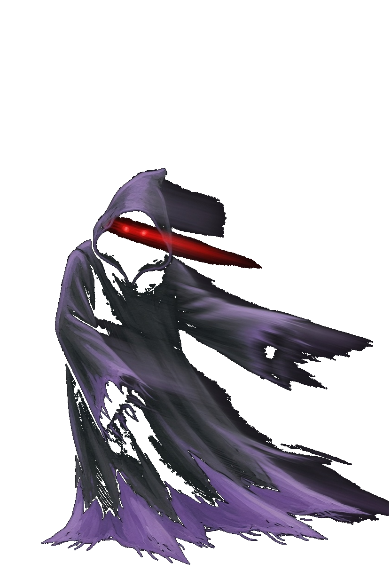
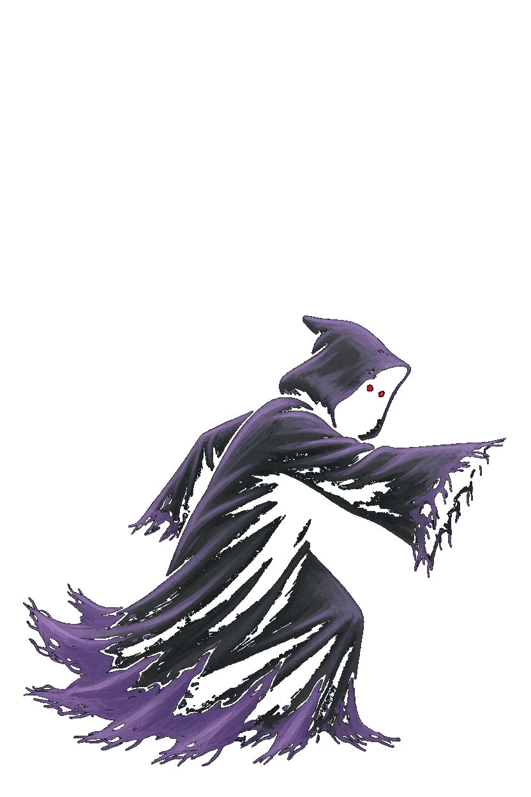
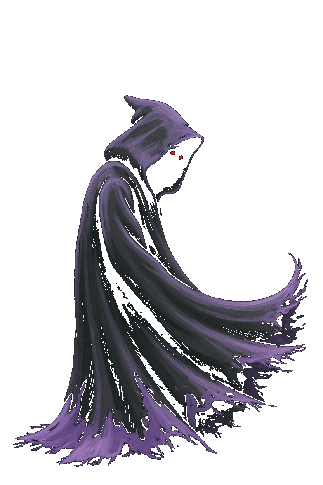
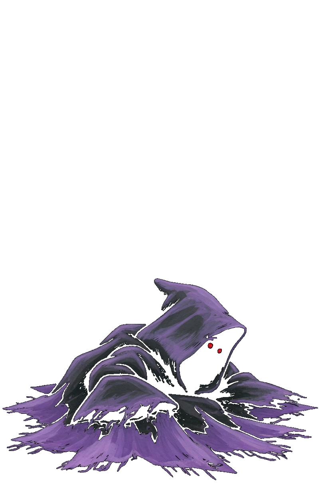
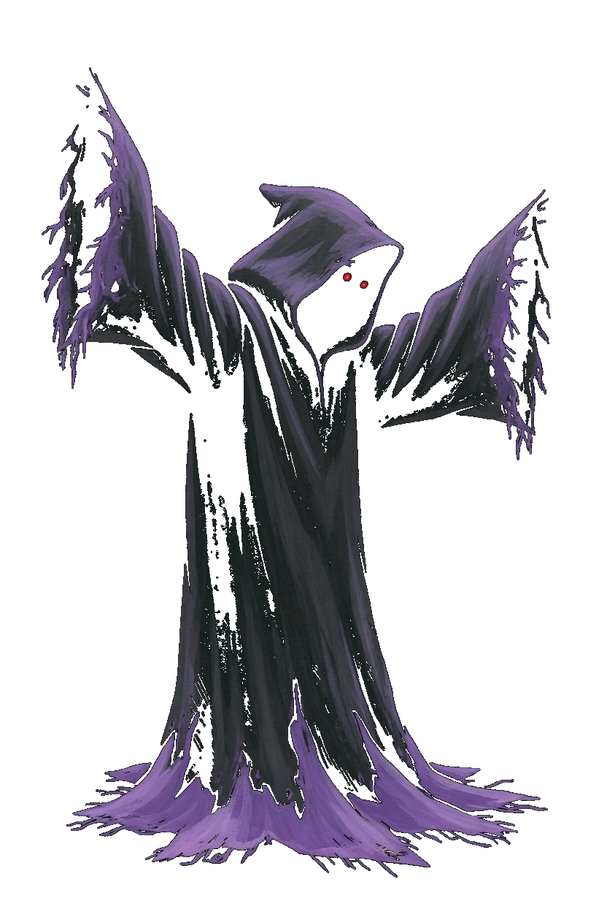

Drain · The Unwriting
This card is the only pose list. A later frame has to match one of these keys. Native facing is right. The whole sprite flips. Charcoal shroud, red eyes, violet hem. The hem is the foot line. Drain is a fist, so the corner step is Close. There is no move named Dash and no Slip key. Drain Touch, Unmake, Drain Cloud, and Grave Step keep those book names. Wraith keeps its own Drain Cloud picture.
| Book | Value |
|---|---|
| Basic | Drain Touch · range 2.0 |
| Body | 875 health · 37 damage · 0.78 attacks/s · speed 2.9 · armor 7 · range 2.0 · mana 90 · regen 8 |
| Crit / cooldown | 0.12 crit · 0.88 cooldown scale |
| Cards | Leech · Regen · Might |
| Moves | Unmake · Drain Cloud · Grave Step |
| Stride | Close · a fist · 30s · cost 8 |
What stays off the body
- Drain Touch is the forward sleeve. The mist on the foe is the cut.
- Unmake is the grab. The ring on the foe is the silence. The book name stays Unmake.
- Drain Cloud keeps that book name. Wraith's cloud stays Wraith's. The live alias Unwriting does not replace it.
- Grave Step is this body's blink. The book name stays Grave Step.
Keys

Idle
Still hood, sleeve forward, hem on the foot line.

Drain Touch
Idle, then the sleeve reaches, then idle. 0.50s.

Unmake
Idle, then the sleeve closes, then idle. 0.52s.

Drain Cloud
Idle, then the violet cloud opens at the hem, then idle. 0.50s.

Grave Step
Idle, then the shroud smears, then idle. 0.50s.

Close
A lunge toward the right, then idle. 0.35s. Corner step only.

Walk
Idle, then one sweep of the hem. 0.72s. Do not copy it into a second step.

Death
One shroud pooled in the lower portion. 1.55s. It is not scaled up to standing height.

Win
Both sleeves rise. The hem stays down. 1.15s.